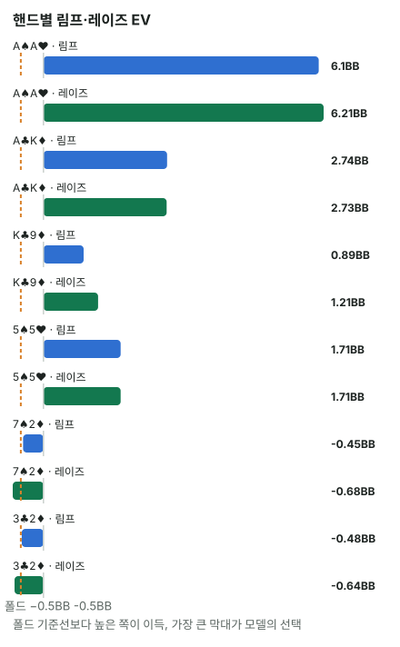

안녕하세요. I10에서 레인지를 %와 콤보로 세는 법을 배웠죠. 오늘은 그걸로 헤즈업(둘만 하는 게임) SB의 첫 행동 표를 읽어 볼게요.
헤즈업 SB는 이상한 자리예요. 표를 보면 한 핸드도 접지 않아요. 7♠2♦, 3♣2♦ 같은 핸드까지요. 오늘은 그게 왜 맞는지 숫자로 따라가고, 표 속 EV와 섞기를 읽는 법까지 볼게요. 오늘 숫자는 헤즈업 조건에서만 써요.
이 글에서 배울 것
- 헤즈업 SB가 접지 않는 이유: 더 낼 돈이 아주 작고, 가장 약한 핸드조차 폴드보다 덜 잃기 때문
- 행동 빈도 표를 핸드별 EV로 읽는 법(폴드 −0.5BB가 기준점)
- 두 행동을 섞는 핸드가 무엇을 뜻하는지, 그리고 표의 EV 숫자만으로는 알 수 없는 것
1단계. 오늘의 조건
- 둘만 남은 게임. SB가 버튼이라 프리플랍은 먼저, 플랍부터는 나중에 행동해요
- 블라인드 SB 0.5BB, BB 1BB, BB가 앤티 1BB를 함께 내는 빅앤티. 시작 팟은 2.5BB
- 레이즈 크기: 100BB면 2.5BB, 25BB면 2BB
숫자는 뚝섬 헤즈업 프리플랍 근사 모델에서 가져왔어요. 프리플랍은 두 사람이 서로 최선으로 대응하도록 풀고, 플랍 이후는 "포지션 있는 쪽이 에퀴티를 조금 더 가져간다"는 계수로 단순화한 모델이에요. 실제 솔버 결과가 아니라 근사예요.
2단계. SB가 접지 않는 이유 — 입장료가 아주 싸요
용어 두 개
에퀴티는 끝까지 갔을 때 이 팟에서 우리가 가져갈 몫이에요. 필요 에퀴티는 콜해서 본전이 되려면 최소한 가져가야 하는 몫이고요.
더 낼 돈은 0.5BB
SB는 이미 0.5BB를 냈어요. BB 금액까지 맞추려면 0.5BB만 더 내면 돼요. 헤즈업 프리플랍에서 이렇게 맞추고 들어가는 걸 림프라고 해요.
필요 에퀴티 = 0.5(더 낼 돈) ÷ (2.5(지금 팟) + 0.5(SB가 더 낼 돈)) = 0.5 ÷ 3 = 약 16.7%
이게 무슨 뜻이냐면, 6번 림프해서 1번만 팟을 가져와도 본전이라는 거예요. 비유하면 입장료가 아주 싼 놀이기구예요.
앤티가 없었다면
빅앤티가 얼마나 입장료를 낮추는지 비교해 볼게요. 앤티가 없으면 지금 팟은 SB 0.5 + BB 1 = 1.5BB뿐이에요.
필요 에퀴티 = 0.5 ÷ (1.5 + 0.5) = 0.5 ÷ 2 = 25%
같은 0.5BB인데, 앤티가 없으면 4번 중 1번은 이겨야 하고, 앤티가 있으면 6번 중 1번이면 돼요. 더 낼 돈은 그대로인데 팟이 커져서 입장료가 팟에 비해 싸진 거예요.
그런데 이건 출발점일 뿐
림프로 끝나는 게 아니에요. BB가 레이즈할 수 있고, 플랍 이후에 에퀴티를 다 가져가지 못할 수도 있어요. 그래서 실제 손익은 16.7%가 아니라, 그런 일까지 다 넣어 계산한 아래 표의 EV로 판단해요.
3단계. 100BB 표 읽기
| 행동 | 전체 빈도 |
|---|---|
| 폴드 | 0% |
| 림프 | 약 33.0% |
| 레이즈(2.5BB) | 약 67.0% |
이 모델에서는 100BB SB가 한 핸드도 접지 않아요. 행동은 림프와 레이즈로 나뉘어요.
여기서 "전체 빈도"는 169가지 핸드 이름을 콤보 수로 가중한 값이에요(I10). 페어는 6, 수딧은 4, 오프수트는 12씩 쳐서 1326 중 몇 %인지 센 거죠. 이게 무슨 뜻이냐면, "레이즈 약 67.0%"는 SB가 받는 카드 조합 세 번 중 두 번꼴로 레이즈한다는 뜻이에요.
4단계. EV로 핸드 따라가기
EV는 "핸드를 시작하기 전 대비 평균 손익"
EV(기대값)는 같은 상황을 아주 여러 번 했을 때 한 번에 평균으로 남는 돈이에요. 비유하면 같은 장사를 백 번 했을 때 하루 평균 매출이에요. 하루하루는 들쭉날쭉해도 평균은 하나로 나오죠.
이 표의 EV는 핸드를 시작하기 전 스택 대비예요. 그래서 폴드는 이미 낸 SB만큼, 언제나 −0.5BB예요. 이게 모든 행동의 기준점이에요.
여섯 핸드
| 핸드 | 폴드 | 림프 | 레이즈 | 모델의 선택 |
|---|---|---|---|---|
| A♠A♥ | −0.5BB | +6.1BB | +6.21BB | 레이즈 100% |
| K♣9♦ | −0.5BB | +0.89BB | +1.21BB | 레이즈 100% |
| 5♠5♥ | −0.5BB | +1.71BB | +1.71BB | 림프 52% · 레이즈 48% |
| A♣K♦ | −0.5BB | +2.74BB | +2.73BB | 림프 74% · 레이즈 26% |
| 7♠2♦ | −0.5BB | −0.45BB | −0.68BB | 림프 100% |
| 3♣2♦ | −0.5BB | −0.48BB | −0.64BB | 림프 100% |

- A♠A♥·K♣9♦: 둘 다 레이즈 EV가 가장 커요. 그래서 모델은 레이즈만 해요
- 7♠2♦·3♣2♦: 셋 다 손해지만 림프가 가장 덜 잃어요. 3♣2♦도 −0.48BB로 폴드(−0.5BB)보다 조금 나아요. 그래서 가장 약한 쪽 핸드도 접지 않는 거예요
- 5♠5♥·A♣K♦: 림프와 레이즈의 EV가 같거나 거의 같아요. 이럴 때 모델은 두 행동을 섞어요(같은 핸드로 두 행동을 나눠서 함)
A♣K♦는 AA 다음가는 높은 핸드인데 림프가 74%나 돼요. "높은 핸드는 레이즈"라는 감각과 다르죠. 이건 '왜 그럴까'에서 이어서 볼게요.
왜 그럴까: 가장 약한 핸드도 왜 폴드보다 덜 잃을까
−0.48BB가 뜻하는 것
3♣2♦의 림프 EV −0.48BB는 "림프하면 평균 0.48BB를 잃는다"는 뜻이에요. 이미 낸 0.5BB 중 아주 조금을 되찾는 셈이죠. 작지만 폴드보다 나아요.
왜 이렇게 될까요? 0.5BB만 더 내고 플랍을 보면, 3♣2♦도 페어나 스트레이트로 이기는 판이 있고, BB가 레이즈하면 그때 접으면 돼요. 그리고 SB는 플랍부터 나중에 말하는 자리라, 상대의 행동을 보고 결정할 수 있어요. 입장료가 싸고 자리까지 좋으니, 가장 약한 핸드도 들어가 보는 게 덜 손해예요.
섞기는 "두 행동의 값이 같을 때" 생겨요
5♠5♥는 림프와 레이즈가 둘 다 +1.71BB예요. 어느 쪽을 해도 이 핸드의 평균 손익이 같으니, 모델이 둘을 52 : 48로 나눠도 이 핸드는 손해가 없어요. 이게 섞기의 기본 모양이에요.
A♣K♦는 +2.74BB와 +2.73BB로 0.01 차이가 보여요. 그런데 표의 EV는 소수 둘째 자리에서 반올림한 값이라, 실제로는 두 값이 같을 수도 있어요. 모델이 이 핸드를 섞었다는 건, 이 모델 안에서는 두 값이 사실상 같다는 신호로 읽을 수 있어요.
높은 핸드를 왜 림프에도 섞을까 — 흔한 해석
모델이 왜 하필 74 : 26을 골랐는지는 표가 말해 주지 않아요. 다만 이런 섞기는 흔히 이렇게 해석해요. 림프하는 SB 레인지에 A♣K♦ 같은 높은 핸드가 일부 들어 있으면, BB가 림프만 보고 "약하다"며 마음대로 레이즈하기 어려워진다는 거죠.
이건 모델의 출력이 아니라 해석이에요. 그리고 근사 모델이라 섞는 비율 자체는 계산 조건에 따라 흔들릴 수 있으니, 비율은 참고로만 봐요.
자주 하는 실수
실수 1. "약한 핸드니까 접는다" 여러 명 테이블의 습관 그대로 헤즈업 SB에서 3♣2♦를 접는 실수예요. 이 모델에서는 폴드 −0.5BB, 림프 −0.48BB라 림프가 덜 잃어요. 대신 헤즈업 SB에서는 "이 핸드가 좋은가"가 아니라 "폴드 −0.5BB보다 나은 행동이 있나"를 물어요.
실수 2. EV가 플러스인 행동이면 아무거나 고르기 K♣9♦는 림프도 +0.89BB로 이득이에요. 그런데 레이즈는 +1.21BB라 더 커요. 이득인 행동이 둘 이상이면, 가장 큰 쪽을 골라야 손해가 없어요. 대신 EV 칸을 보면 모든 칸을 다 비교해요.
실수 3. 여러 명 테이블에서 SB만 남았을 때 그대로 쓰기 6명 테이블에서 모두 접어 SB와 BB만 남아도, 그때 SB는 플랍부터 먼저 행동해요(포지션 없음). 헤즈업 SB는 버튼이라 플랍부터 나중에 행동하죠. 빅앤티도 없을 수 있는데, 2단계에서 봤듯 앤티가 없으면 기준선이 25%로 올라가요. 대신 오늘 표는 헤즈업·빅앤티 조건에서만 써요.
"SB가 이렇게 다 들어오면, BB는 어떻게 해야 해요?"
좋은 질문이에요. SB가 넓게 들어온다는 건, BB 입장에서 SB 레인지에 약한 핸드도 섞여 있다는 뜻이에요. 다만 림프 레인지에도 A♣K♦·5♠5♥ 같은 핸드가 일부 들어 있죠.
BB가 실제로 얼마나 넓게 레이즈하고 콜해야 하는지는 이 글의 숫자로는 알 수 없어요. 오늘 표는 SB 첫 행동만 담고 있어서, BB 쪽 EV는 따로 봐야 해요. 지금은 "SB 레인지가 넓다 = SB가 약하다"로 바로 이어지지 않는다는 것만 기억해요.
숫자가 뒤집히는 지점
기준은 세 가지예요.
- 어떤 핸드의 림프·레이즈 EV가 모두 −0.5BB보다 낮아지면 폴드가 나와요
- 림프 EV와 레이즈 EV의 크기 순서가 바뀌면 행동이 바뀌어요
- 두 EV가 같아지면 섞기가 나와요
스택 깊이가 바뀌면 이 EV들이 함께 움직이고, 선택지 자체가 늘어나기도 해요.
선생님의 한마디
헤즈업 SB 표를 볼 때는 이렇게 읽어요.
- 표를 열면 먼저 스택 깊이와 앤티 조건이 지금 판과 같은지 확인하기(100BB 표를 25BB 판에 쓰지 않기)
- 핸드를 찾으면 −0.5BB 칸에 손가락을 대고, 그보다 큰 칸이 있는지 보기
- 섞기가 나오면 비율을 외우려 하지 말고, "이 핸드는 두 길 다 괜찮다" 정도로 받아들이기
연습 문제 (같은 조건, 스택만 25BB로)
뚝섬 헤즈업 공부 화면에서 같은 조건의 표를 볼 수 있어요. 아래 문제는 주어진 숫자로 직접 따져 보세요.
25BB에서는 레이즈가 2BB로 작아지고, 올인이라는 행동이 하나 더 생겨요. 전체 빈도는 림프 약 38.7%, 레이즈 약 58.4%, 올인 약 2.8%, 폴드 0%예요.
문제 1. J♠3♦의 EV는 폴드 −0.5BB, 림프 −0.11BB, 레이즈 −0.17BB, 올인 −0.12BB이고, 빈도 칸은 림프 100%예요. 100BB의 A♣K♦도 두 행동이 0.01 차이였는데 그쪽은 섞었죠. (1) J♠3♦가 림프인 이유는? (2) "EV 차이가 0.01 이하면 섞는다"고 외워도 될까요?
정답 보기
(1) 넷 다 손해지만 림프가 가장 덜 잃고, 폴드(−0.5BB)보다 나아요.
(2) 안 돼요. 표의 EV는 반올림 값이라, 보이는 0.01 차이가 진짜 차이일 수도(J♠3♦), 사실상 같은 값일 수도(A♣K♦) 있어요. 같은 25BB 표에서 J♣4♦는 림프 −0.12BB, 올인 −0.12BB로 보이고 림프 91% · 올인 9%로 섞어요. 이웃한 핸드끼리도 갈리니, 섞는지는 EV 칸이 아니라 빈도 칸을 읽어야 알 수 있어요.
문제 2. 5♠4♠는 100BB 표에서 폴드 −0.5BB, 림프 −0.08BB, 레이즈 −0.12BB로 림프 100%였어요. 25BB 표에서는 림프 −0.01BB, 레이즈 −0.03BB, 올인 +0.14BB예요. 100BB 습관대로 25BB에서도 림프하면 무엇을 놓칠까요?
정답 보기
25BB에서는 올인이 가장 크고, 넷 중 유일하게 플러스예요(모델 기준 올인 100%). 림프하면 −0.01BB로 아주 조금 잃는 판을, 올인하면 +0.14BB로 버는 판으로 바꿀 수 있었어요. 차이는 +0.14 − (−0.01) = 0.15, 단위는 위와 같은 BB예요. 100BB 표에는 올인 칸이 없었으니, 예전 표를 외워 둔 사람은 이 칸을 아예 못 봐요. 왜 25BB에서 올인 값이 커지는지는 이 표가 말해 주지 않아요. 스택 깊이에 따라 표가 어떻게 바뀌는지는 E18에서 다뤄요.
핵심 정리
- 헤즈업 SB는 0.5BB만 더 내면 들어갈 수 있고, 빅앤티로 팟이 커서 필요 에퀴티가 약 16.7%로 낮아요
- 표의 EV는 핸드 시작 대비라 폴드는 언제나 −0.5BB. 이보다 나은 행동이 있으면 접지 않아요
- 이 모델에서는 가장 약한 쪽 핸드도 림프가 폴드보다 덜 잃어서, 폴드 0%
- 섞기는 두 행동의 값이 같을 때의 모양이고, 표의 EV는 반올림이라 같은지 다른지는 빈도가 알려 줘요
정리하며
오늘은 헤즈업 SB의 첫 행동 표를 읽었어요. 더 낼 돈이 0.5BB뿐이고 빅앤티로 팟이 커서 기준선이 약 16.7%로 낮았고, 3♣2♦ 같은 핸드도 림프하면 폴드(−0.5BB)보다 덜 잃어서 이 모델의 SB는 한 핸드도 접지 않았어요. 5♠5♥·A♣K♦처럼 두 행동의 값이 같은 핸드는 섞었는데, 그 이유는 해석일 뿐 표에 적혀 있지 않다는 것까지 봤어요.
다음 글 I13에서는 자리를 바꿔 여러 명 테이블의 BB에서 버튼 오픈을 맞는 장면을 봐요. 오늘은 모델 표를 읽었다면, 다음 글은 가정한 상대 레인지로 콜 하한을 직접 따져 봐요.
AI 작성 · 헤즈업·빅앤티 근사 모델 기준(뚝섬 hu_preflop, 플랍 이후는 에퀴티 실현 계수로 단순화 · 솔버 결과 아님 · 6맥스 아님) · EV는 핸드 시작 대비